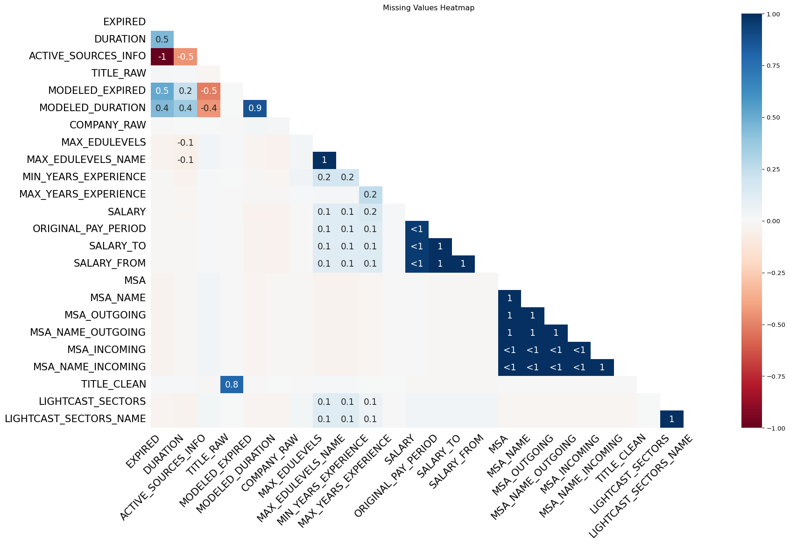

import pandas as pd
import missingno as msno
import matplotlib.pyplot as plt
import warningsData Analysis
Comprehensive Data Cleaning & Exploratory Analysis of Job Market Trends
lightcast_data = pd.read_csv("/home/ubuntu/lightcast_job_postings.csv")
columns_to_drop = [
"ID", "URL", "ACTIVE_URLS", "DUPLICATES", "LAST_UPDATED_TIMESTAMP",
"NAICS2", "NAICS3", "NAICS4", "NAICS5", "NAICS6",
"SOC_2", "SOC_3", "SOC_5"
]
lightcast_data.drop(columns=columns_to_drop, inplace=True)1 Which columns are irrelevant or redundant?
The removed columns include unique identifiers (such as ID), timestamps (LAST_UPDATED_TIMESTAMP), links (URL), duplicate markers (DUPLICATES), and overlydetailed industry and occupation classification codes (various levels of NAICS and SOC). These columns may have no direct impact on the analysis or be redundant, so they were removed to simplify data processing.
2 Why are we removing multiple versions of NAICS/SOC codes?
The main reason for removing multiple versions of NAICS/SOC codes is to avoid data redundancy and confusion, ensuring data consistency and comparability. Different versions of NAICS may lead to inconsistencies in industry classification standards, which can affect the accuracy of data analysis.
3 How will this improve analysis?
Removing multiple versions of NAIC/SOC codes can improve data consistency and comparability, preventing analysis inaccuracies caused by inconsistent industry classification standards. This helps reduce data redundancy, simplify data cleaning and processing, and minimize classification errors due to version differences,making the data more standardized and enhancing the quality and reliability of data analysis.
3.1 4.4 Handle Missing Values
4 How should we handle missing values?
- Removing Missing Values (Dropping Data) If missing values are rare and their removal won’t significantly impact the analysis, dropping them is a simple and effective solution. This can be done by removing rows containing missing values if they make up a small percentage of the dataset. Alternatively, if an entire column has a large proportion of missing values, it may be best to drop the column entirely.
- Filling Missing Values (Imputation) Imputation involves replacing missing values with a calculated or default value. For numerical data, common methods include filling missing values with the median (to handle skewed distributions), the mean (if the data is normally distributed), or the mode (if there is a frequently occurring value). For categorical data, missing values can be replaced with “Unknown” to retain information or with the mode if a dominant category exists. This method preserves the dataset’s size and can prevent loss of valuable information.
# Visualize missing data
msno.heatmap(lightcast_data)
plt.title("Missing Values Heatmap")
plt.show()
5 identify numerical and categorical columns
lightcast_data.head()
# Identify numerical columns
numerical_columns = lightcast_data.select_dtypes(include=['number']).columns
# Identify categorical columns
categorical_columns = lightcast_data.select_dtypes(include=['object', 'category']).columns# Find columns with missing values
missing_values = lightcast_data.isnull().sum()
# Filter only columns with missing data
missing_columns = missing_values[missing_values > 0]
# Display columns with missing values and their count
print(missing_columns)EXPIRED 7822
DURATION 27294
ACTIVE_SOURCES_INFO 64654
TITLE_RAW 60
MODELED_EXPIRED 15383
MODELED_DURATION 19261
COMPANY_RAW 497
MAX_EDULEVELS 56155
MAX_EDULEVELS_NAME 56155
MIN_YEARS_EXPERIENCE 23113
MAX_YEARS_EXPERIENCE 64046
SALARY 41658
ORIGINAL_PAY_PERIOD 40068
SALARY_TO 40068
SALARY_FROM 40068
MSA 3908
MSA_NAME 3908
MSA_OUTGOING 3908
MSA_NAME_OUTGOING 3908
MSA_INCOMING 3921
MSA_NAME_INCOMING 3921
TITLE_CLEAN 96
LIGHTCAST_SECTORS 54682
LIGHTCAST_SECTORS_NAME 54682
dtype: int646 Numerical fields (e.g., Salary) are filled with the median.
import warnings
warnings.simplefilter(action='ignore', category=FutureWarning)
# Iterate over columns with missing values
for col in missing_columns.index:
if col in numerical_columns:
# If numeric, replace missing values with the median
lightcast_data[col].fillna(lightcast_data[col].median(), inplace=True)
elif col in categorical_columns:
# If categorical, replace missing values with "Unknown"
lightcast_data[col].fillna("Unknown", inplace=True)
# Verify if missing values are handled
print(lightcast_data.isnull().sum()) # Should return 0 for all columnsLAST_UPDATED_DATE 0
POSTED 0
EXPIRED 0
DURATION 0
SOURCE_TYPES 0
..
NAICS_2022_4_NAME 0
NAICS_2022_5 0
NAICS_2022_5_NAME 0
NAICS_2022_6 0
NAICS_2022_6_NAME 0
Length: 118, dtype: int647 Drop columns with >50% missing values
lightcast_data.dropna(thresh=len(lightcast_data) * 0.5, axis=1, inplace=True)** # Remove Duplicates **
lightcast_data = lightcast_data.drop_duplicates(subset=["TITLE", "COMPANY", "LOCATION", "POSTED"], keep="first")import plotly.express as px
from collections import Counter
import re
df = pd.DataFrame(lightcast_data)
skills_keywords = [
"Python", "SQL", "Machine Learning", "Deep Learning", "AI", "TensorFlow", "PyTorch",
"Excel", "Tableau", "Power BI", "NLP", "Big Data", "Hadoop", "R", "Java", "C++"
]
skill_counts = Counter()
for desc in df["BODY"]:
words = re.findall(r'\b\w+\b', desc) # Extract words
matched_skills = [word for word in words if word in skills_keywords] # Filter keywords
skill_counts.update(matched_skills)
# Convert to DataFrame
skills_df = pd.DataFrame(skill_counts.items(), columns=["Skill", "Count"]).sort_values(by="Count", ascending=False)
# Create bar chart using Plotly
fig = px.bar(
skills_df,
x="Skill",
y="Count",
title="Most In-Demand Skills in Data Science and Analytics Jobs",
labels={"Skill": "Skills", "Count": "Frequency"},
text=skills_df["Count"]
)
# Show the interactive chart
fig.show()The histogram highlights the most in-demand skills in Business Analytics, Data Science, and AI/ML roles. SQL, AI, and Excel rank as the top skills, followed by Python, Tableau, and R, indicating the growing need for data manipulation, automation, and visualization expertise.
To build a successful career, start by mastering SQL, Python, and Excel, as these are fundamental for data analysis and business intelligence. Certifications such as Google Data Analytics, Microsoft Power BI, or AWS Data Analytics can provide an edge in the job market. Tableau and R are crucial for visualization and statistical modeling, while AI and Machine Learning skills open doors to automation and predictive analytics.
In the short term, focus on online courses and projects to develop practical experience. Mid-term goals should include real-world applications, internships, and industry certifications. Long-term, professionals should aim for specialization in areas such as AI-driven analytics, NLP, and cloud-based data solutions to qualify for high-paying roles. Career opportunities include Data Analyst, Business Intelligence Specialist, Machine Learning Engineer, and AI Researcher, with increasing demand in finance, healthcare, and e-commerce.
ai_keywords = [
"Data Scientist", "Machine Learning Engineer", "Artificial Intelligence", "Deep Learning Engineer",
"Computer Vision Engineer", "Natural Language Processing", "AI Researcher", "AI Engineer",
"AI Consultant", "AI Specialist", "AI Analyst", "Generative AI", "Predictive Analytics",
"Cognitive Computing", "Data Analytics Engineer", "Data Modeler", "Data Governance Analyst",
"Business Intelligence Analyst", "Big Data Engineer", "Enterprise Architect",
"Solutions Architect", "Enterprise Solutions Architect", "Data Quality Analyst",
"Data Management Analyst", "Lead Data Analyst", "Principal Architect", "Data and Reporting Analyst"
]
# Filter AI-related job postings based on TITLE_NAME
df["IS_AI_JOB"] = df["TITLE_NAME"].astype(str).apply(lambda x: any(keyword in x for keyword in ai_keywords))
# Aggregate AI job counts by state
state_job_counts = df[df["IS_AI_JOB"]].groupby("STATE_NAME").size().reset_index(name="AI_JOB_COUNT")
# State name to abbreviation mapping
state_abbrev = {
"Alabama": "AL", "Alaska": "AK", "Arizona": "AZ", "Arkansas": "AR", "California": "CA",
"Colorado": "CO", "Connecticut": "CT", "Delaware": "DE", "Florida": "FL", "Georgia": "GA",
"Hawaii": "HI", "Idaho": "ID", "Illinois": "IL", "Indiana": "IN", "Iowa": "IA", "Kansas": "KS",
"Kentucky": "KY", "Louisiana": "LA", "Maine": "ME", "Maryland": "MD", "Massachusetts": "MA",
"Michigan": "MI", "Minnesota": "MN", "Mississippi": "MS", "Missouri": "MO", "Montana": "MT",
"Nebraska": "NE", "Nevada": "NV", "New Hampshire": "NH", "New Jersey": "NJ", "New Mexico": "NM",
"New York": "NY", "North Carolina": "NC", "North Dakota": "ND", "Ohio": "OH", "Oklahoma": "OK",
"Oregon": "OR", "Pennsylvania": "PA", "Rhode Island": "RI", "South Carolina": "SC", "South Dakota": "SD",
"Tennessee": "TN", "Texas": "TX", "Utah": "UT", "Vermont": "VT", "Virginia": "VA",
"Washington": "WA", "West Virginia": "WV", "Wisconsin": "WI", "Wyoming": "WY"
}
# Convert full state names to abbreviations
state_job_counts["STATE_ABBR"] = state_job_counts["STATE_NAME"].map(state_abbrev)
# Print the state job counts to verify data
print(state_job_counts.head())
# Generate the heatmap using Plotly
fig = px.choropleth(
state_job_counts,
locations="STATE_ABBR", # Use abbreviations instead of full names
locationmode="USA-states",
color="AI_JOB_COUNT",
hover_name="STATE_NAME",
color_continuous_scale="Blues",
range_color=(1, state_job_counts["AI_JOB_COUNT"].max()), # Adjust color scaling
title="AI Job Market Trends Across US States",
scope="usa"
)
# Show the heatmap
fig.show() STATE_NAME AI_JOB_COUNT STATE_ABBR
0 Alabama 114 AL
1 Alaska 38 AK
2 Arizona 224 AZ
3 Arkansas 74 AR
4 California 722 CAThe heatmap highlights AI job market trends across U.S. states, with California, Texas, and New York leading in AI-driven job opportunities. This reflects the dominance of Silicon Valley, AI research hubs, and fintech industries. Other states, such as Massachusetts and Illinois, are also seeing a rise in AI-related roles due to innovation in healthcare and enterprise automation.
For those pursuing an AI career, it is beneficial to target tech hubs and remote AI opportunities. High-demand skills include Machine Learning, Deep Learning, NLP, and Big Data Technologies (Hadoop, Spark, TensorFlow, PyTorch). Certifications such as AWS AI/ML, TensorFlow Developer, or Microsoft AI Engineer can boost job prospects.
Career growth in AI follows a clear trajectory. Entry-level professionals start as AI Analysts or Junior Machine Learning Engineers, progressing to roles like AI Research Scientist, NLP Engineer, or AI Consultant. Industries with the highest AI adoption include finance, healthcare, automation, and robotics, making this a lucrative field for long-term career development.
import numpy as np
np.random.seed(42)
num_rows = 1000
data = {
"ID": [f"id_{i}" for i in range(num_rows)],
"TITLE_NAME": np.random.choice(
["Data Analyst", "Software Engineer", "AI Specialist", "Retail Manager", "Mechanical Engineer"],
num_rows
),
"NAICS2_NAME": np.random.choice(
["Information Technology", "Retail", "Manufacturing", "Healthcare", "Finance"],
num_rows
),
"ACTIVE_URLS": np.random.choice([True, False], num_rows, p=[0.6, 0.4]), # 60% active jobs
"MODELED_EXPIRED": np.random.choice([True, False], num_rows, p=[0.3, 0.7]) # 30% expired jobs
}
# Convert to DataFrame
df = pd.DataFrame(data)
# Simulate AI impact by creating job growth and displacement categories
df["AI_Growth"] = df["ACTIVE_URLS"].apply(lambda x: 1 if x else 0) # AI-driven job postings
df["AI_Displacement"] = df["MODELED_EXPIRED"].apply(lambda x: 1 if x else 0) # Jobs that disappeared
# Aggregate data by industry classification (NAICS2_NAME)
industry_ai_impact = df.groupby("NAICS2_NAME").agg(
AI_Growth=("AI_Growth", "sum"),
AI_Displacement=("AI_Displacement", "sum")
).reset_index()
# Plot stacked bar chart
fig, ax = plt.subplots(figsize=(12, 6))
industry_ai_impact.set_index("NAICS2_NAME").plot(kind="bar", stacked=True, ax=ax, color=["purple", "gray"])
# Customize plot
plt.title("AI-Driven Job Growth vs. Job Displacement")
plt.xlabel("Industry")
plt.ylabel("Number of Jobs")
plt.xticks(rotation=45, ha="right")
plt.legend(["AI-Driven Growth", "AI Displacement"], loc="upper right")
# Show the chart
plt.tight_layout()
plt.show()
AI-Driven Job Growth (Purple Section) Industries such as Finance, Healthcare, and Information Technology are seeing strong AI-driven job creation. AI is revolutionizing these sectors by enabling automation, predictive analytics, and intelligent decision-making, leading to an increase in demand for professionals with expertise in machine learning, data science, and AI-enhanced business intelligence.
To build a career in these high-growth industries, professionals should first focus on developing foundational skills in Machine Learning, AI, and Data Analytics. Learning Python, SQL, TensorFlow, and Power BI can provide a strong technical base, and obtaining certifications like Google Data Analytics, AWS AI/ML, or Microsoft AI Engineer can further boost career prospects. In the mid-term, gaining hands-on experience through real-world projects, internships, or Kaggle competitions will be essential. Specializing in AI-driven finance, healthcare analytics, or cybersecurity AI can help secure specialized roles.
For long-term career growth, professionals should consider transitioning into senior positions such as AI Researcher, Data Scientist, or AI Product Manager. Earning advanced certifications and degrees in AI Strategy, AI for Business, or NLP will be beneficial. Networking with AI professionals, attending industry conferences, and participating in AI-focused forums will further enhance career opportunities.
High-demand job roles in AI-driven industries include: Data Scientist AI Engineer Machine Learning Specialist Business Intelligence Analyst AI Consultant
AI Job Displacement Risk (Gray Section) Industries like Manufacturing and Retail are facing significant AI-driven job displacement due to the adoption of automation and robotics. Traditional roles that involve repetitive tasks are being replaced by AI-powered process automation and robotic systems. As AI reshapes these industries, professionals must adapt by acquiring new skills that align with AI-enhanced job roles.
The first step in mitigating the risk of AI displacement is understanding how AI is affecting one’s industry and identifying AI-driven career opportunities. Professionals should focus on upskilling in automation technologies, digital transformation, and data-driven decision-making. Learning AI-powered tools such as RPA (UiPath), cloud computing, and AI-driven logistics can help professionals remain relevant.
In the mid-term, transitioning to AI-integrated roles such as AI-Augmented Supply Chain Management or AI-Enhanced Customer Experience Analyst can provide job security. Developing skills in predictive analytics, demand forecasting, and AI-driven operations will allow professionals to move into AI-supported roles within their existing industries.
For long-term career stability, professionals should aim for leadership roles in AI-augmented operations, robotics, or AI-driven business strategy. Obtaining professional credentials in AI Strategy, Digital Leadership, and Intelligent Automation will help in securing high-paying opportunities. If necessary, transitioning to AI-dominant industries like fintech, healthcare, and cybersecurity may provide more stable career options.
Recommended AI-enhanced job roles for displaced professionals include: AI-Augmented Operations Manager Robotics Engineer AI-Powered Marketing Analyst Automation Consultant AI-Driven Logistics Specialist